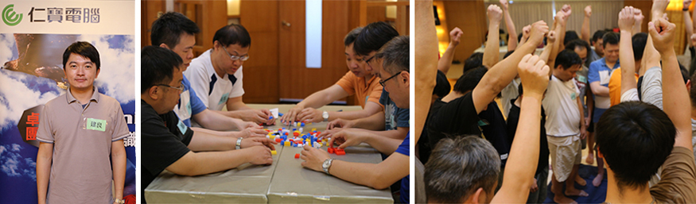

那一刻，36=∞
戰地記者：建良 Elvis
|  | ||
『活力共識營』應該就像以前求學時的公民訓練或戰鬥營被操操體力吧！抱著這天真想法的我到了當天才發現大錯特錯，第一天下午的報數就讓我有很大的感受，以往很多認為不可能做到的事情都是自己的預設立場把自己框住了，只要找對方法就沒有做不到的事情，不只是工作，生活亦然。就在這活動結束後，覺得似乎沒有想像中的操啊！ NO~NO~接下來的活動才知道，原來幾張小板凳可以讓幾個大男人汗如雨下，衝第一的我們覺得一切順利的時候，被魔鬼教練沒收了一張板凳，「不可能嘛！小小的空間要擠8個大男人耶！」就在這想法在我心裡發芽時，看到同隊的夥伴們沒人想放棄，儘管全身濕透還是緊緊抱在一起抵擋暴風雨來襲，最終我們得到第一名。但讓人感動的是最後一組，全部的夥伴抱著最後一組一起抵擋暴風雨，一個都不能少的心情凝聚了大家的團結心。晚上的靜態活動更是讓人省思，回想每個階段總是有人幫你一把，時時抱著感恩的心讓人更容易知足，珍惜現有的一切！ 隔天一早的積木活動徹底打破了我這隊長的自信心，埋頭苦幹遠不如了解顧客的需求，自以為是的瞭解更是要不得，領頭羊在瞬息萬變的市場可能在轉眼間就徹底地翻盤！真的很慶幸在活動中學到這寶貴的經驗。最終的活動打破了大家小圈圈的迷思，讓人充分體會團隊常常在時而競爭時而合作的模式中彼此成長。 以往待過的公司都有強調團隊合作的重要性，不過在這兩天的活動中，我才體會到真正的TEAM WORK是什麼樣子，能發揮多麼大的力量！這些力量在仁寶一點一滴的累積，就會讓仁寶不管在什麼領域都能取得領先的地位。 |
||